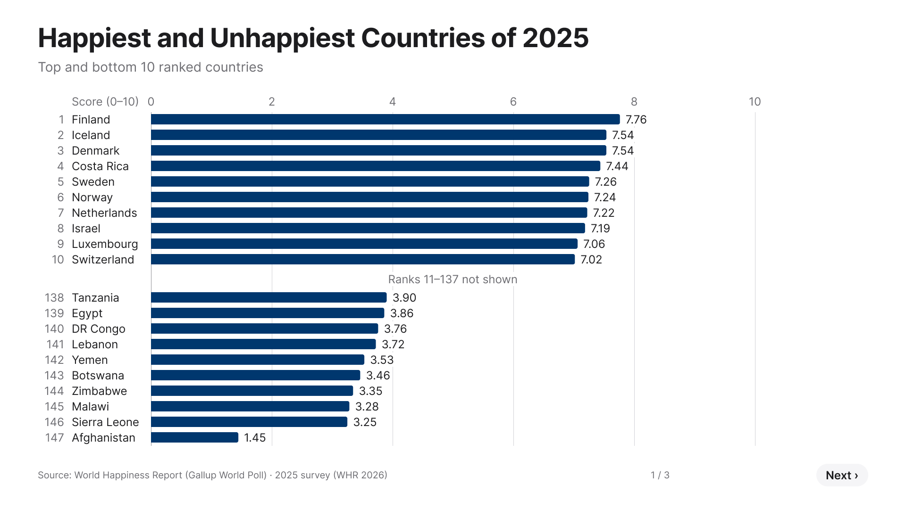
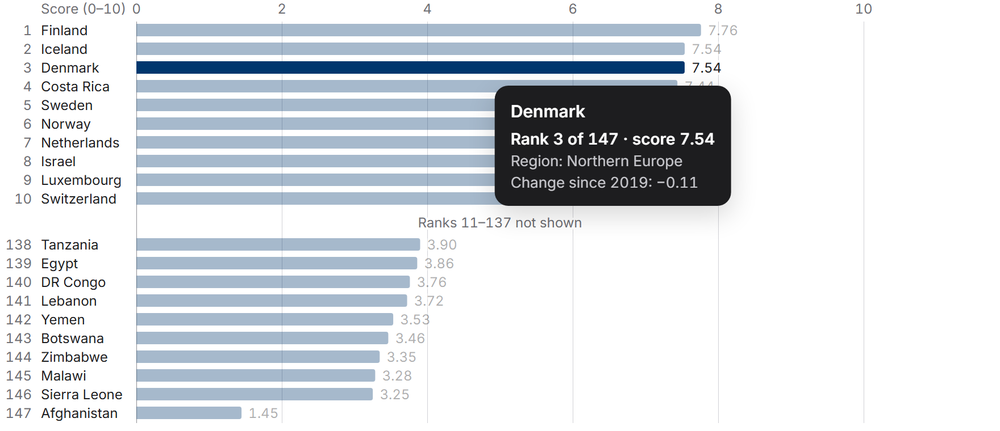
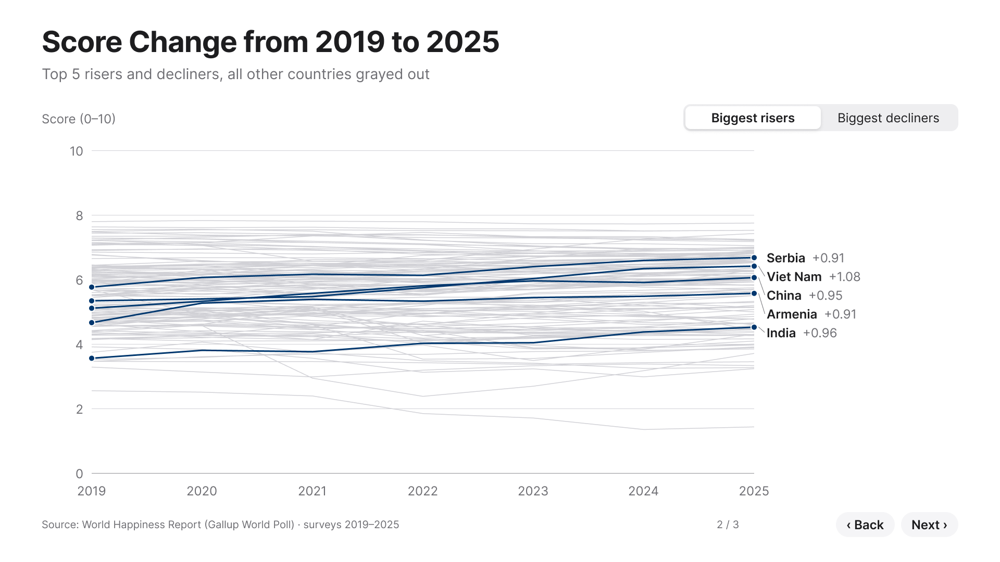
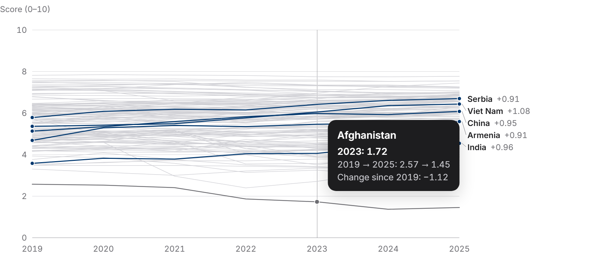
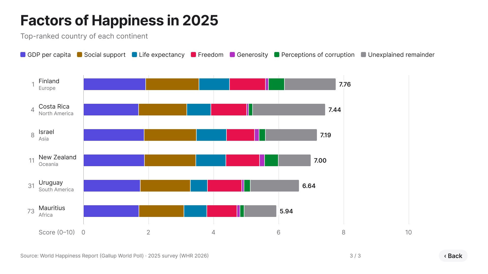
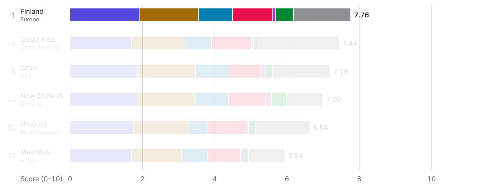

Happiest and Unhappiest Countries of 2025


INFO 4602 · Open Skill 2 · World Happiness surveys 2019–2025
The three dashboards from Open Skill 1, first prototyped in Figma, now coded in D3.js with the interactions Figma couldn’t do: tooltips that follow your cursor, every country’s line to explore, one continent filter that links all three charts, and an animated switch between the biggest risers and decliners.
Top and bottom 10 ranked countries
Top 5 risers and decliners
Grey lines are the other countries surveyed in all seven years. Hover any line to see it.
Top-ranked country of each continent
Each Open Skill 1 frame beside its D3 chart, drawn from the same data at the same coordinates.





